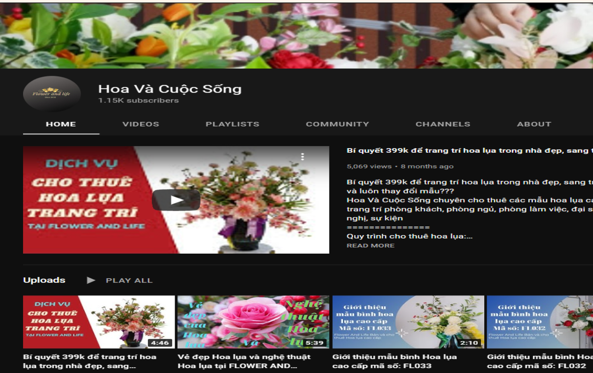

Projects
Project # 3
Youtube Management
Becoming a video editor in the summer can be a great way to gain experience and build a portfolio in the
field so, during the Covid-19 pandemic, I decided to take up upon the work of managing including the
designing Youtube thumbnails and editing their videos for the channel. It was about the healthy living
lifestyle with plants and the other was a traveling vlog type of channel. For around the 3 months of
summer, I designed a total of 20+ videos on Black Magic Davinci Resolve 18 and working with photoshop for
its thumbnails. According to the youtube analytics, the total views of the videos I designed for was 11%
higher than average with the retention time increasing from 3mins 16s to 5mins 15s

BEN